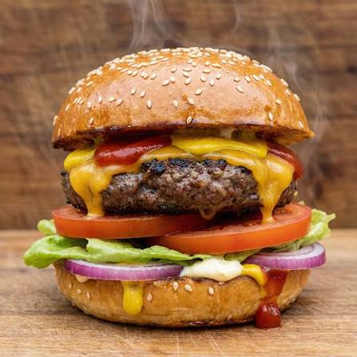

Pizza

About Cheese burger
A cheeseburger is an iconic American classic featuring a juicy, seasoned ground beef patty topped with a layer of perfectly melted cheese, served inside a soft, toasted bun
Ingredients
- Ground Beef: 680g (1.5 lbs) ground chuck (80/20 lean-to-fat ratio is best for maximum juiciness)
- Cheese: 4 thick slices of American cheese or sharp Cheddar
- Buns: 4 burger buns (Brioche, potato, or sesame seed buns)
- Butter: 2 tablespoons, softened (for toasting the buns)
- Seasoning: Salt and freshly cracked black pepper (to taste)
Steps
- Prep the buns and toppings.
- Shape the beef patties with a center dimple.
- Cook the patties in a hot skillet.
- Add the cheese and let it melt.
- Assemble the burger and serve hot.